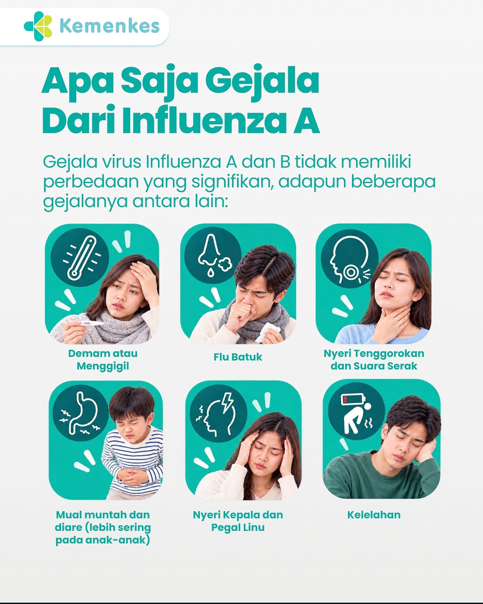

Madu lebah tanpa sengat (Meliponini / klanceng / kelulut) sangat efektif untuk membantu meredakan gejala, mempercepat pemulihan, serta mencegah komplikasi akibat infeksi virus influenza (flu).
Meskipun penyakit influenza disebabkan oleh virus Influenza, madu ini tidak bekerja sebagai obat antivirus sintetik tunggal, melainkan bekerja secara holistik mendukung pertahanan tubuh melalui 4 mekanisme biokimia utama:
1. Modulasi Sistem Imun & Aktivitas Antiviral Alami
- Menstimulasi Respon Imun Inang: Mikrobioma baik (seperti Bakteri Asam Laktat dan Bacillus) serta metabolit sekunder di dalam madu ini berinteraksi dengan sel-sel imun tubuh, meningkatkan regulasi imunitas alami (innate immunity) serta mendukung keseimbangan respon imun tanpa memicu inflamasi berlebih.
- Aktivitas Antiviral Phytochemical: Senyawa bioaktif tanaman (seperti alkaloid pirolizidin, flavonoid, dan polifenol) yang terserap dari resin pot propolis tempat penyimpanan madu terbukti memiliki sifat antivirus alami dan membantu meningkatkan respon kekebalan tubuh terhadap infeksi virus.
2. Meredakan Peradangan Saluran Napas & Gejala Utama Flu (Demam & Batuk)
- Penekanan Enzim & Sitokin Inflamasi: Infeksi virus influenza memicu respon peradangan yang membuat saluran napas membengkak dan tenggorokan perih. Kandungan flavonoid (seperti naringenin, kaempferol, apigenin, chrysin) secara aktif menekan pelepasan penanda radang (TNF-α, IL-6) dan menurunkan ekspresi enzim pemicu inflamasi (COX-2 dan iNOS), sehingga meredakan pembengkakan dan sesak di dada.
- Pereda Demam & Pelapis Tenggorokan: Secara etnobotani dan tradisional, madu ini digunakan untuk meredakan demam ringan (antipiretik) serta bertindak sebagai pelapis fisik alami (demulcent) untuk menenangkan saraf tenggorokan yang lecet akibat batuk flu.
3. Netralisasi Stres Oksidatif (+45% Antioksidan Lebih Tinggi)
- Serangan virus memicu lonjakan reactive oxygen species (ROS) dan stres oksidatif yang merusak sel-sel mukosa pernapasan. Madu Meliponini memiliki kapasitas antioksidan hingga 45% lebih tinggi dibandingkan madu lebah biasa (Apis mellifera), yang berfungsi memburu radikal bebas dan melindungi jaringan paru-paru dari kerusakan sel berantai.
4. Mencegah Infeksi Bakteri Sekunder (Superinfection)
- Saat tubuh melemah akibat virus influenza, saluran pernapasan sangat rentan dihinggapi bakteri patogen sekunder (seperti Staphylococcus aureus, Streptococcus pyogenes, dan Haemophilus influenzae) yang dapat memicu komplikasi seperti bronkitis atau pneumonia. Sifat antibakteri spektrum luas dari madu ini—akibat pH asam alami, pelepasan hidrogen peroksida (\(\text{H}_2\text{O}_2\)), dan senyawa propolis—membasmi kuman patogen tersebut agar flu tidak berlanjut menjadi infeksi bakteri berat.
🍵 Panduan Dosis & Cara Minum Saat Influenza
- Aturan Konsumsi:
- Saat Tenggorokan Perih / Batuk Kering: Minum 1 sendok teh MURNI (tanpa dicampur air) 2–3 kali sehari secara perlahan agar cairan madu melapisi mukosa tenggorokan.
- Saat Demam, Badan Pegal, & Berdahak: Seduh 1–2 sendok teh madu dalam segelas air hangat suam-suam kuku (suhu di bawah 40°C) ditambah perasan jeruk nipis/lemon untuk menghidrasi tubuh dan mengencerkan dahak.
- Petunjuk Simpan: Wajib disimpan di dalam kulkas pada suhu ~4°C agar kualitas enzim, probiotik, dan antioksidan alaminya tetap utuh.
Mau coba madu klanceng asli? Chat kami langsung di WhatsApp atau lihat pilihan kemasan di sini.